Shark's Dinner
Sitio oficial

Sobre el juego
Premisa
El juego consiste en ayudar a un tiburón a comer unos ricos peces para la cena. Pero cuidado, porque también hay peligros que debe evitar. No todos los peces son igual de sabrosos y nutritivos, en el océano hay criaturas venenosas que le caen mal al tiburón y le harán vomitar los últimos peces que haya comido. Si el tiburón logra comer hasta quedar satisfecho, ¡será toda una victoria!

Sprite por defecto del tiburón.
Tiburón listo para comer.

Un pobre pez.
Controles
El tiburón no puede dejar de moverse, va y viene de izquierda a derecha constantemente, y se hunde por su propio peso si no nada hacia arriba de vez en cuando.
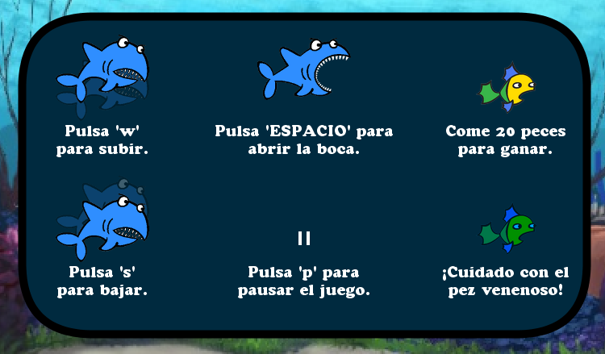
Captura de la pantalla de controles de la versión más reciente del juego.
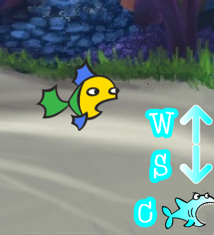
Captura de pantalla de los controles de la versión original.
Sólo puede moverse con libertad hacia arriba (W) y hacia abajo (S). Y por supuesto que puede abrir la boca (ESPACIO) para comer a todos los peces que se crucen por su camino. Las versiones más recientes también incluyen la opción de pausar (P) el juego.
Créditos
El juego fue creado por Fernando Cardos Martegani, inspirado por varios juegos similares pero programado desde cero por él. En sus versiones de Processing contó con la orientación de los docentes Matías Jauregui Lorda y Tobías Albirosa.
Todas las imágenes utilizadas en el juego son de la librería de Scratch, la cual es de uso libre.
La versión más reciente utiliza un fragmento de una versión instrumental de la canción 'Sharks' de la banda Imagine Dragons.
Videos
Dos videos hechos por el creador del juego como parte de las consignas de los trabajos prácticos, que exigían una breve explicación del código.
Video explicativo del tp3, la primera versión del juego en Processing.
Video explicativo del tp5, la segunda versión del juego en Processing.
Historia
Scratch
El juego fue creado originalmente por Fernando Cardos Martegani a mediados de 2017, mientras cursaba el cuarto año de la escuela secundaria. Fue uno de los varios experimentos que programó curioseando con el programa Scratch, un entorno didáctico basado en bloques que se conectan como piezas de rompecabezas para formar una cadena de instrucciones. Todas las imágenes utilizadas en el programa son del repertorio gratuito que ofrece Scratch.
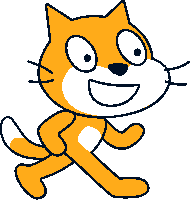
Logo de Scratch.
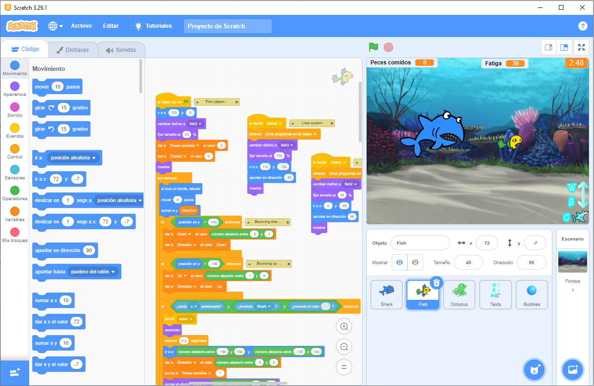
Captura de pantalla del Shark's Dinner original en la versión actual del editor de Scratch.
Processing: programación procedimental
Unos años después, en 2022, Fernando se hallaba cursando la materia Tecnología Multimedial 1, donde se lo introdujo al lenguaje y entorno de Processing. En el trabajo práctico 3 se le pidió crear un minijuego, para lo cual Fernando revisó sus viejos experimentos de Scratch y tomó Shark's Dinner como referencia. El resultado de este tp3 fue muy fiel al juego original, salvando algunos detalles más que nada visuales.
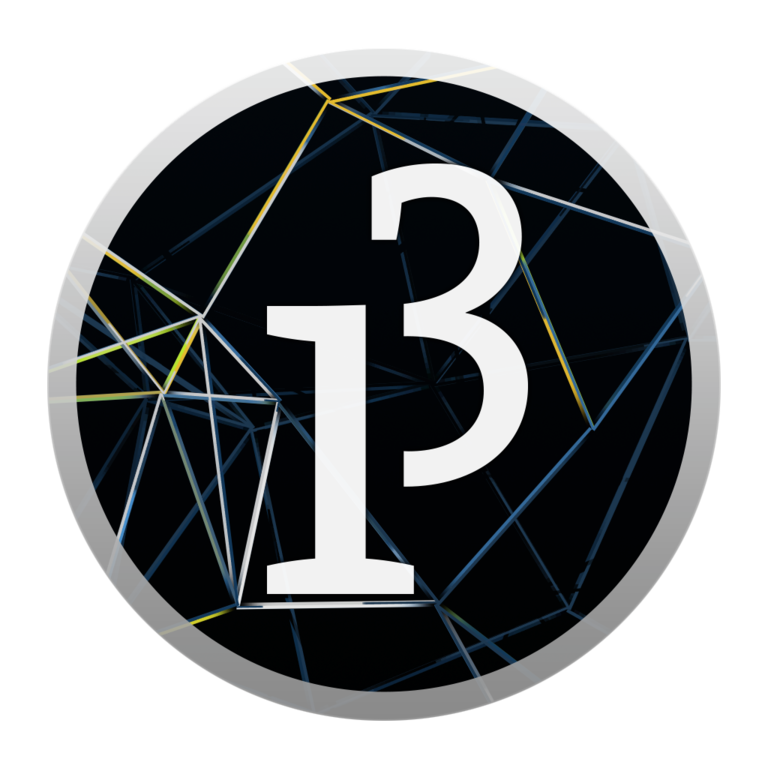
Logo de Processing.

Captura de pantalla del Shark's Dinner en Processing.
Processing: programación orientada a objetos
Como trabajo final de esa misma cursada, Fernando debía crear otro minijuego pero utilizando la programación orientada a objetos (POO), lo que exigía estructurar el programa de forma bastante diferente a como venía trabajando. Adelantándose a la consigna, empezó a reescribir el código de Shark's Dinner en este nuevo formato, lo cual permitió recuperar algunas características de la versión original que no pudo trasladar en el tp3, como el efecto de burbujas al comer un pez.
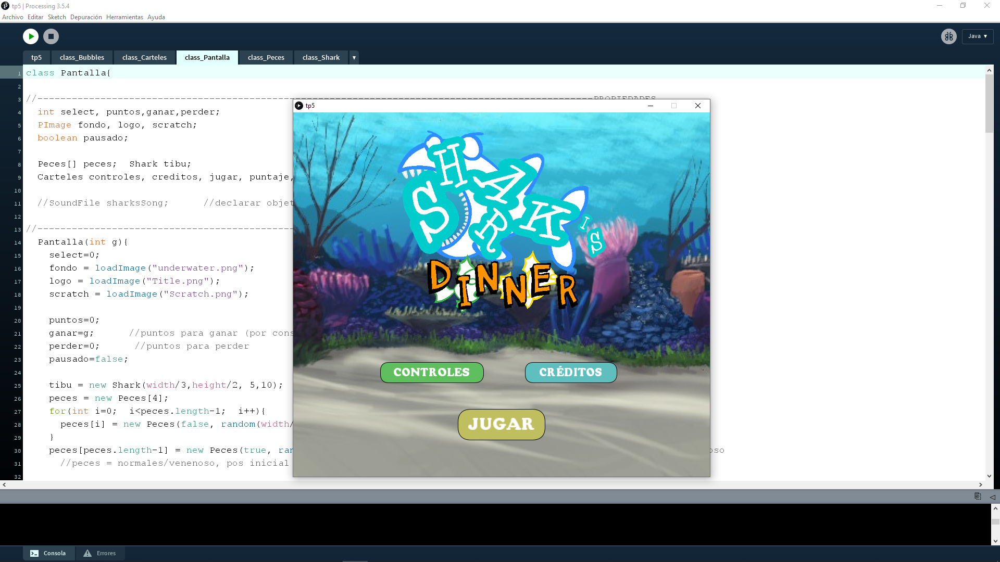
Captura de pantalla del Shark's Dinner actual.
Otros trabajos
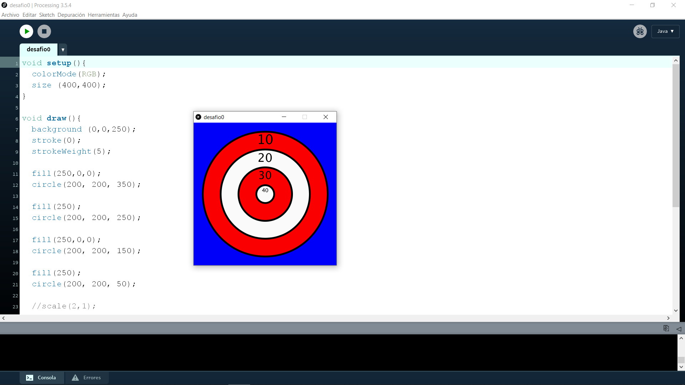
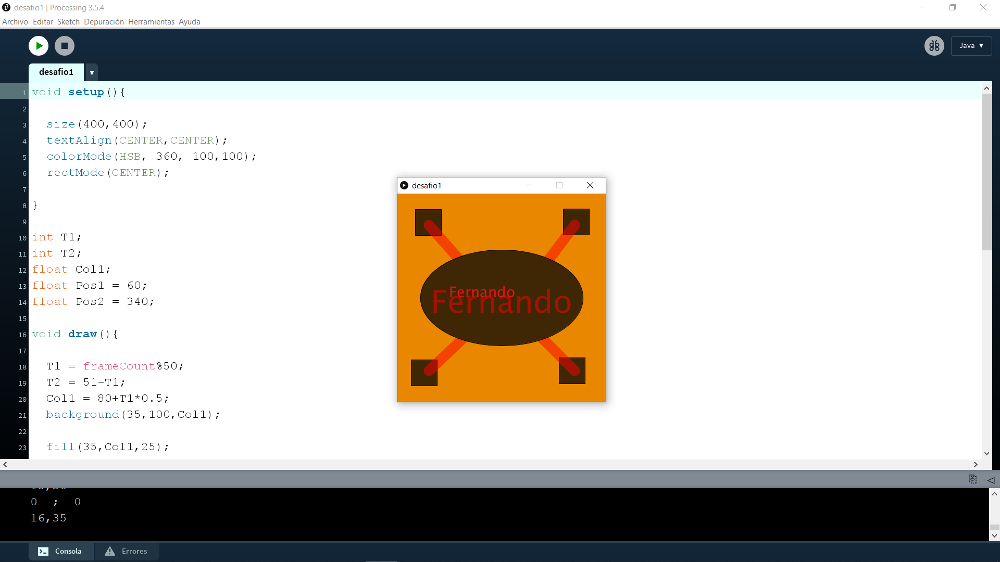
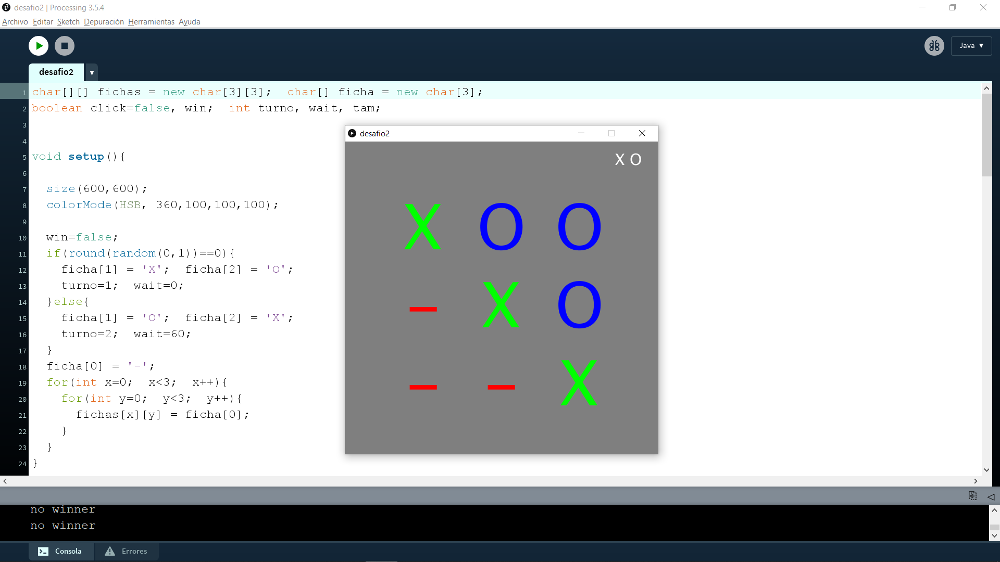
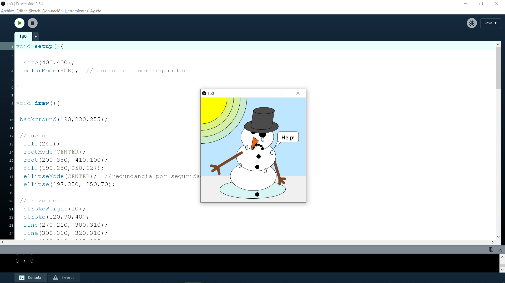

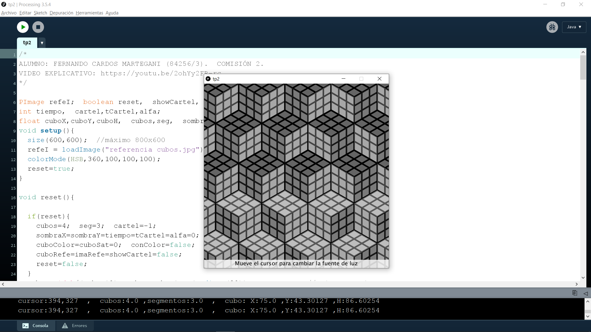
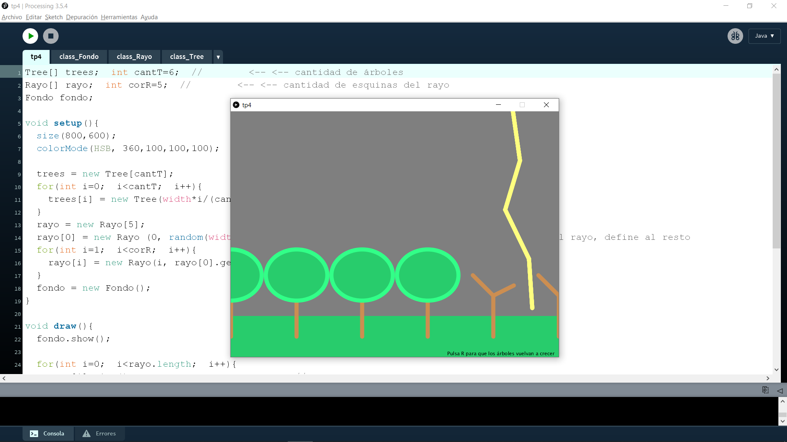